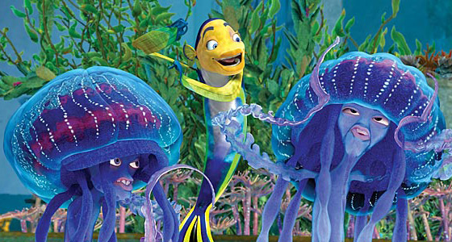

Adaptações
Defensivas:
As águas-vivas utilizam seus tentáculos como principal meio de defesa no mundo aquático.O tamanho e o número de tentáculos e células picadas, bem como a potência da picada depende do tipo de água-viva, as picadas são bastante poderosas e podem até paralisar o peixe. No caso da
Tamoya haplonema, ela
possui cerca de sete a oito tentáculos e tem uma potência de picada mediana.
Alimentares:
As águas-vivas podem utilizar seus tentáculos para estender a “mão” e empurrar itens alimentares em direção a sua boca.
Movimento:
Algumas águas-vivas preferem
flutuar,deixando a corrente carregá-las aqui e ali , já que seu corpo é composto por cerca de
90% de água fazendo a flutuação ser natural. já outras preferem usar os músculos do corpo principal para nadar, esses músculos tocam toda a forma do sino movendo-se para
baixo e para cima ondulando e criando movimento.
Reprodução
A reprodução ocorre por alternância de gerações, ou seja, a reprodução assexuada alterna-se com a sexuada, em um ciclo, em que há também alternância entre as formas pólipo(Assexuada) e medusa (sexuada). Ela ocorre em qualquer época do ano , embora seja mais comum a colocação de ovos e sua fertilização subsequente no verão ou quando as temperaturas estão mais altas. Além disso ter comida disponível é uma das condições que favorecem a reprodução
O desenvolvimento embrionário:
As medusas machos produzem espermatozoides e as medusas fêmeas produzem os óvulos. os gametas encontram-se na água e formam um zigoto, que levará a formação de uma larva plânula. essa larva fixa se no substrato e desenvolve-se em um novo pólipo.
Não possuindo comportamento de corte.
Inspiração

-
Irmãos água-viva Shark-tale (Espanta tubarões em português).